This site represents the Official England branch of the International Shinkendo Federation, the Aikibujutsu Tanren Kenkyukai and the Kokusai Toyama Ryu Renmei organisations.
These organisations were founded, and are currently directed by Obata Toshishiro Kaiso for the sake of promoting, supporting and overseeing Shinkendo, Aikibujutsu and Toyama Ryu schools around the world.
On this page you will find information about Shinkendo - Japanese Swordsmanship and its founder Obata Toshishiro Kaiso. There is also a listing for the officially licensed honbu (headquarters) dojo (training hall) based in Milton Keynes, as well as information about Aikido, Aikibujutsu and Toyama Ryu.
Shinkendo UK is a non-profit organisation dedicated to the spread of Shinkendo and Aikibujutsu within the United Kingdom.
For additional information, please visit www.shinkendo.com.
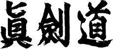 In feudal times the core aspect of any Japanese warrior's martial education was that of swordsmanship. Shinkendo is a comprehensive reunification of what the Samurai once used and relied upon for survival, and can be classified as a combination of the founder's own technical and structural innovations and an amalgamation of several traditions of Japanese swordsmanship that have been forced to evolve and splinter over time. Unified, Shinkendo is a historically accurate and comprehensive style of Japanese Swordsmanship.
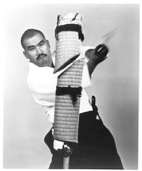The Shinkendo school emphasizes very traditional and effective swordsmanship, which with serious training, leads to both practical ability as well as an understanding of classical martial arts. Shinkendo is steeped in the traditions of the samurai, in such ways as Heiho (strategy), Reiho (proper Bushido etiquette) and philosophy. Toshishiro Obata Kaiso is the founder, director and chief instructor of The Kokusai Shinkendo Renmei (International Shinkendo Federation), an organization dedicated to teaching authentic Japanese swordsmanship.
Training in Shinkendo is balanced between five different streams of practice. These streams, called the Goho Gorin Gogyo, include:
Students always train using a Bokuto (wooden sword), and later advance to training with Iaito (non-sharpened sword) and finally Shinken, or 'live blade'. At more advanced levels, the student begins to test their acquired skills through test cutting practice on tatami omote makiwara (rolled up tatami mats, previously soaked in water), and eventually Take (Japanese or Chinese bamboo).
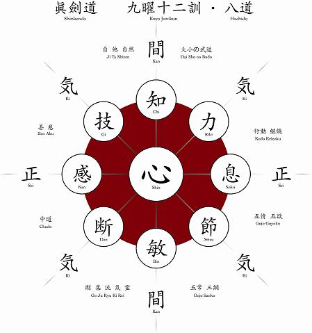 The goal of Shinkendo is to develop and harmonize the mind and body. Proficiency in swordsmanship and spiritual development are not sequential achievements; they are interactive and interdependent developments. The serious practitioner should devote themselves to tireless practice of the techniques of the Goho Gorin Gogyo and embodiment of the principles and philosophy of Jinsei Shinkendo (life is Shinkendo). This is not to imply that one should become a senseless devotee of the art but rather that the concepts learned through Shinkendo should be used to improve and balance all areas of a practitioner's life. More succinctly one should seek to integrate the teachings and philosophy of the Kuyo Junikun (12 precepts of the nine planets stratagem) and the 8 ways of the Hachido into their daily lives.
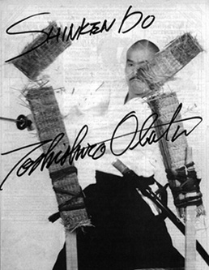While Shinkendo requires rigorous physical training, depth of coordination, and intense focus, one of the most important aspects of Shinkendo is the emphasis on spiritual forging, which inspires Bushi Damashii (the Samurai/ warrior spirit), a quality that is as relevant now as it was hundreds of years ago. Proper practice of Shinkendo should provide one with not only a strong body and mind, but also a calm, clear and focused spirit. It is this aspect of the training which can be carried into any part of one's life and thus makes Shinkendo as relevant now as it was a thousand years ago.
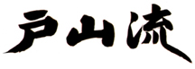The Kokusai Toyama Ryu Renmei (KTRR, AKA International Toyama Ryu Federation) is headed and founded by Obata Toshishiro, Honbucho. Obata Sensei originally came to America in 1980, licensed with the positions and responsibilities of Beikoku Honbucho (American Headquarters) for Toyama ryu, Nakamura ryu and Battodo, and is continuing in his efforts now under the KTRR.
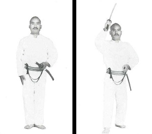Originally a small sub-system of sword drawing techniques created for officers of the Japanese Imperial Army, Toyama ryu is now represented in various forms throughout the world as an independent sword art.
The Toyama ryu "gunto soho" (military sword methodology) was created and standardized (seitei) in 1925 in response to concern that officers would not be able to effectively draw and employ their sword (gunto) should the need arise while operating in hostile environments. After WWII, the Japanese Imperial Army was disbanded, and three major lines of Toyama ryu were adapted and taught independently - Morinaga style, Yamaguchi style, and Nakamura style. Nakamura Taizaburo Sensei was one of Obata Sensei's main sword instructors. In view of Obata Sensei's skill and dedication, the art of Toyama ryu was charged to him upon his relocation to America as the Chief Instructor of America.
Since that time, Toyama ryu has been completely subsumed into the Shinkendo curriculum and embellished as follows:
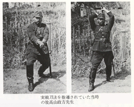 Toyama ryu is categorized in Shinkendo as "gaiden waza" (borrowed techniques). Though ranks are awarded separately for Toyama ryu, these limited methods are taught as part of the overall Shinkendo curriculum, and as such cannot be taught independent of the art of Shinkendo. The KTRR does not participate in form (engi) or cutting (tameshigiri) competitions, and is not affiliated with any other line or organization.
Our line of Toyama ryu emphasizes accurate, powerful and rapid deployment of the sword, combined with a strong expression of kiai. This spirit of training was how the art was originally taught to the students of the Imperial Japanese Army Rikugun Toyama Gakko. Though elements of Iai arts were used in the formation of the Toyama ryu curriculum originally, the context and intent of Toyama ryu and modern Iaido are totally different, and were not intended to be practiced in the same way.
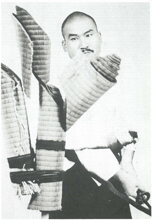 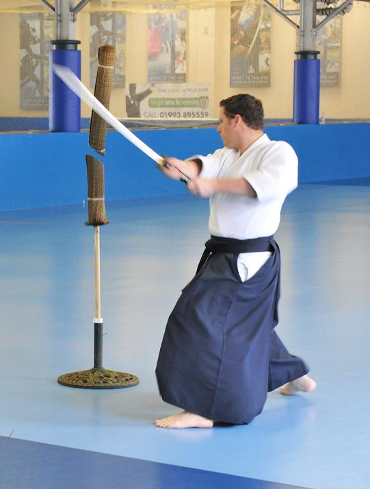
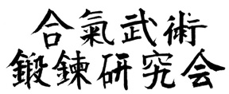 The fundamental idea of Aikibujutsu is the same as that of Aikidō, which is to blend with and control an opponent’s energy in order to subdue him/or her with minimal effort, force, and injury. Hence the essence of the Aiki arts is quite different from many modern competitive arts where competitions or displays of strength are the central idea. Nevertheless, since Aikibujutsu is a form of Japanese budō, the technique involved must be effective and realistic. In modern times an aggressor will attack with punches, kicks, grappling, or use weapons such as knives, or wooden bats, therefore Aikibujutsu training includes both attacking and blocking methods that are practical to modern situations.
The most important aspect of Aikibujutsu training is safety. Initially, the student learns the basics of Aikidō, which includes ukemi (falling and receiving techniques), osae waza (control techniques) and nage waza (throwing techniques). The focus is first on soft and flowing techniques, so that students can learn to harmonize with their opponents and practice taking safe ukemi. It’s important to understand that at this level of training these techniques are not practical for self defense. Once students can take safe ukemi and have sufficient stamina, they proceed to learning Aikibujutsu, which incorporates aikijūjutsu and Edo torimonojutsu (samurai arresting techniques), which are more realistic and effective systems of goshin (self-defense). As students advance, they must thoroughly understand and practice the theories embodied in the basics in order to use henka (variations) of techniques, which can be adapted and applied to various real situations. By applying these different variations and adjusting to the opponent’s attack, the technique will take shape as true goshin (self-defense). In this way, Aikibujutsu is very practical and strong as goshin jutsu (self-defense technique) and taihō jutsu (arresting technique).
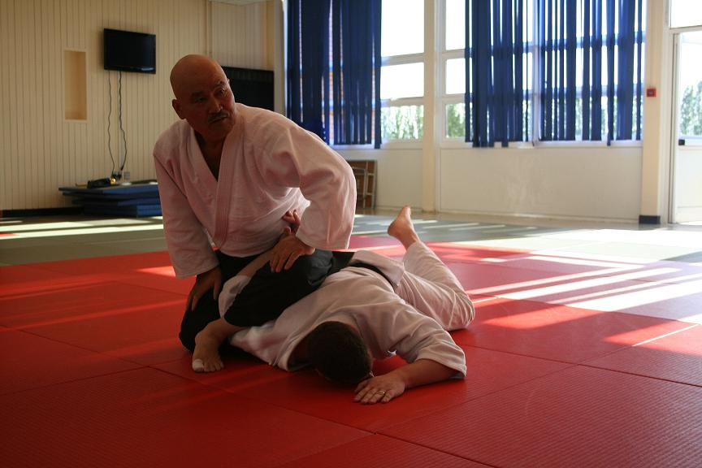Attacking - Aikibujutsu incorporates basic striking such as tsuki (punches) and keri (kicks), in addition to the more traditional tegatana (“hand-sword”) strikes. Unlike some arts, Aikibujutsu does not condone methods of bare-handed disarms against a swordsman, as these encourage the practice of extremely dangerous strategies or techniques that are unlikely to succeed against the versatility of sword technique.
Blocking - Shutō uke (sword-hand block) - When an opponent attacks with a tsuki or a strike one must block. Aikibujutsu incorporates various shutō uke techniques from jōdan (high), chūdan (middle), and gedan (low) level which seamlessly transition into techniques of throwing, controlling, and pinning the opponent.
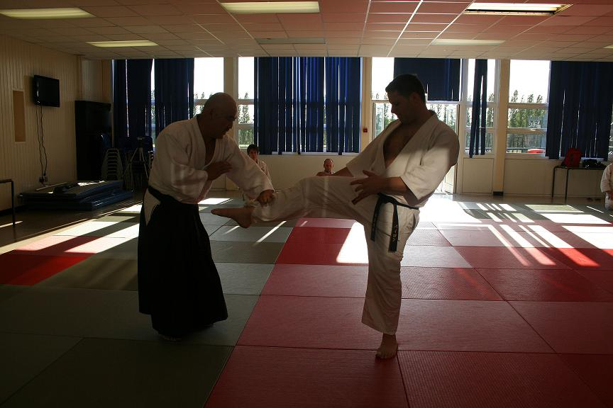When an opponent grabs one’s hand, one must escape the grasp and then moves into a technique. The six basic hand positions for tehodoki are kagami (mirror), tekagami (hand-mirror), ten (heaven), chi (earth), jun (obverse) and gyaku (reverse). After tehodoki, the technique progresses into throwing, controlling, or pinning the opponent. For example, there are tehodoki movements that transition from konohagaeshi to ikkajō, and from gyaku konohagaeshi to ikkajō, and from aikiage to ikkajō, and so on.
Torite refers to a technique or approach that is applied before the opponent attacks in order to make him/or her easier to subdue, and is utilized by police officers and guardsmen as part of effective arresting methods. In taihōjutsu, the goal is to defeat the aggressor while minimizing the damage inflicted. Even during a lawful arrest or in self-defense if one injures the aggressor by kicking or punching this use of force can easily become excessive or unnecessary. To show consideration for the aggressor and limit the injuries inflicted is considered the ideal execution of taihōjutsu. Since it’s best to control an aggressor by restricting movement, kicks and punches should only be used if necessary to supplement a submission technique.
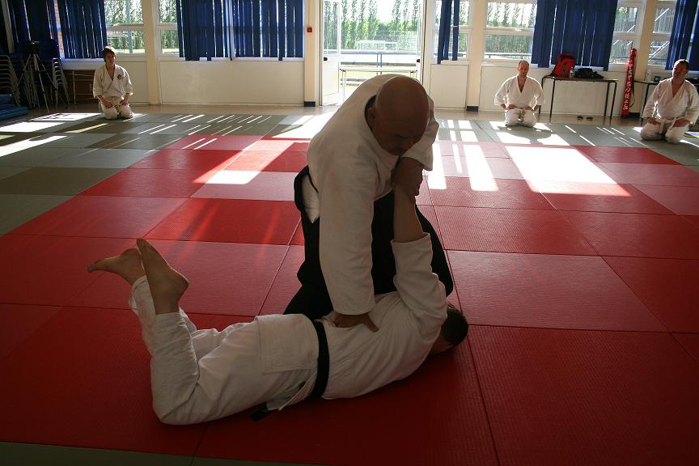Through combining different throwing techniques in renzoku nagewaza, the student gains stamina, learns to breathe correctly, and attains the natural movements of ashisabaki (footwork) and taisabaki (body movement).
When the opponent attacks and the defender reverses the technique and applies a technique of their own this is referred to as kaeshiwaza. These methods are taught to advanced students.
In addition to empty-handed techniques, one learns tantōjutsu (knife technique), bokutō waza (wooden sword technique), shumoku jutsu (stick technique), jōjutsu (medium staff technique), and other weapons.
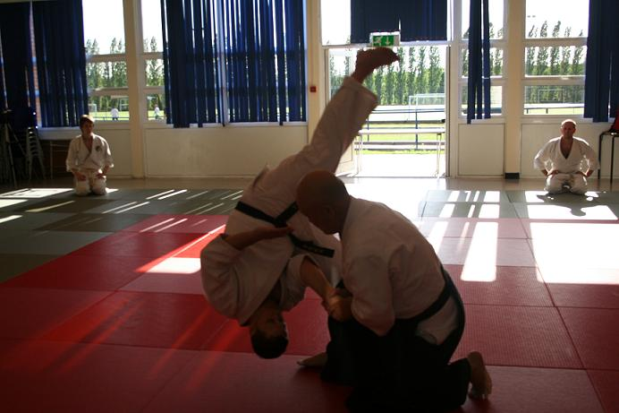The approach to teaching Aikido to children must be individualized and based on their physical ability since their joints are weaker and more flexible than adults. The focus is to develop a foundation of safe Taiso such as front roll, back roll, and cartwheel, followed by Tesabaki, and Ashisabaki. Once a level of proficiency has been achieved then basic throwing and control techniques can be introduced. To accomplish this level of individualized teaching the Aikido instructor must constantly adjust to the child’s level.
Equal in importance to the training of physical technique is the development of the mind and spirit. In Shinkendo, Aikibujutsu, and Bōjutsu Tanrendō, students study the philosophies of Kuyō Junikun, Hachidō, Goiku, and Meitō no Yōsō in order to cultivate and train the mind and spirit. Seishin shugyō is explained further in Modern Bushido (Obata, 2011).
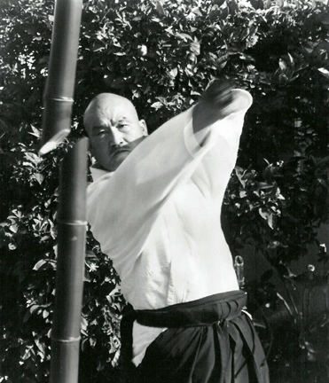The Obata family originally descended from the Heike clan. Of Samurai family lineage, Obata Toshishiro was born in Gunma Prefecture, Japan in 1948. Mr. Obata is a descendant of Obata Toramori, who served as a general and strategist (one of the famous 24 strategists) for the Takeda family during the civil war, Sengoku era. Toramori would become the lord of Kaizu Jo (castle) in Shin Shu (Nagano) province.
At the age of 18, Mr. Toshishiro Obata was accepted as an uchi deshi (live in student) at the Yoshinkan Aikido Headquarters in Tokyo under the direct instruction of the founder Master Gozo Shioda. For 7 years Mr. Obata served as an instructor at the Yoshinkan, several universities, the Metropolitan Riot Police and the Japanese Self Defense Army.
Looking to expand on the sword work taught in Aikido training, the young Obata cross trained in several other studies, including Yagyu Ryu Swordsmanship under the twenty first generation Soke Yagyu Nobuharu, and the study of Zen with the members of the Shiyukai. However, as an uchi deshi he was not able to pursue other arts seriously and as a result left the Yoshinkan in 1973.
After leaving the Yoshinkan, Mr. Obata joined the Tokyo Wakakoma (an elite group of martial artists, who serve as fight scene choreographers, actors and stuntmen for Japanese television and movies). Through the experience with the Tokyo Wakakoma and the martial arts connections made during this time, Mr. Obata was able to seriously study classical sword arts as well as other Budo (Japanese war arts) while concurrently developing skills as an action coordinator and actor. He was named Bushido Shihan of the Tate dojo (internal to the Wakakoma) and led instruction in Bajutsu (archery from horseback), Yoroi (the wearing of traditional clothing and armor), Yarijutsu (spear) and Naginata (Japanese halberd).
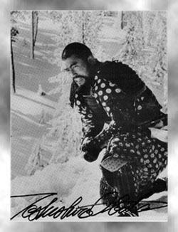 In 1980, Mr. Obata came to the USA to pursue the development of his career as an actor and stunt choreographer. After 10 years as the Soke (Chief Instructor) of the USA Toyama and Nakamura Ryu Battodo Federation, Mr. Obata redirected his efforts into developing the fundamentals of the sword art "Shinkendo" - a system based upon his vast experience, knowledge and historical research.
Today The International Shinkendo Federation is an organization dedicated to teaching the techniques and philosophy of true Japanese swordsmanship. In 1996, Mr. Obata went on to found the Aikibujutsu Tanren Kenkyukai, a research and practice organization of Bujutsu/Budo ranging from the earliest forms of Aikijutsu to modern Aikido and Taihojutsu (control & arresting arts that are tailored for use in the law enforcement and security fields). Both are organizations, which Mr. Obata formed in order to develop and emphasize traditional and effective technique, which with serious training imparts practical ability as well as a deep understanding of classical Japanese martial arts.
Mr. Obata's lifelong dedication to Japanese Budo (traditional martial arts) has made him an unrivaled authority in the techniques, history and philosophy of the ancient Samurai. In effort to share his knowledge and experience with others, Obata Kaiso often takes time away from the Hombu (headquarters) in Los Angeles, California to teach seminars at his branch schools in other parts of the world. The knowledge and training that he has been able to passes on to his students and instructors has allowed the organization to grow a strong foundation. Today over 60 international branches teach Shinkendo and Aikibuken.
Mr. Obata has had the honor to receive instruction under renowned martial arts masters who were specialists in their respective fields. Including:
Other credentials and experience include:
In an effort to make his knowledge and experience available to others, Mr. Obata has written the following books:
Throughout his film career in Japan and during the last 20 years that he has lived in the US, Mr. Obata has acted and directed choreography in the following films:
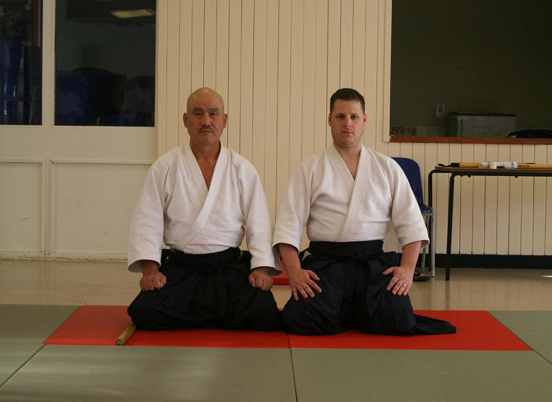Shepherd Sensei has a strong interest in Japanese martial arts, which began at a young age. As a child he studied Karate and eventually gained his black belt. In his early twenty's he traveled frequently to train with some of the world’s best martial art masters. In doing so he gained extensive experience in Aikikai Aikido, Shodokan Aikido, Aikijujutsu and Traditional Jujutsu. His travels eventually led him to Obata Sensei who upon watching him demonstrate his technical prowess, he made it his life’s mission to train with and learn everything he could from this martial arts master.
Presently Shepherd Sensei is the only direct student of Toshishiro Obata Kaiso in the UK and travels frequently to train with him in the honbu dojo. As a direct student of Obata Kaiso, Shepherd Sensei has had the distinct privilege of learning Aikibujutsu, Shinkendo, Toyama Ryu and Bojutsu Tanrendo directly from the founder of the arts. This is an honour that he is greatly appreciative of.
Shepherd Sensei has also had the privilege of training under the following:
Joe Thambu 7th Dan Shihan, Robert Mustard 7th Dan Shihan, Yasuhisa Shioda Kancho, Moriteru Ueshiba Doshu, Mitsuteru Ueshiba 'Waka' Sensei, Miyako Fujitani 7th Dan Shihan, Minoru Kanetsuka 7th Dan Shihan and Hiroshi Ikeda 7th Dan Shihan.
At present Shepherd Sensei runs the honbu dojo in Milton Keynes. He teaches Shinkendo, Toyama Ryu, Aikibujutsu, and Bojutsu.
Private lessons can be arranged on request, where required.
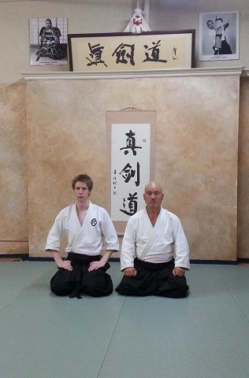Dunkley Sensei began his martial arts career Studying Kempo Karate in 1996 in Northampton. In 2008 he gained the rank of Shodan, and is still currently training.
In 2005, Dunkley Sensei joined the ISF and began training in Shinkendo and Aikibujutsu under Shepherd Sensei. He has since gained the instructor ranks in both, and in 2012 he visited the honbu dojo in order to train there.
Dunkley Sensei has had the pleasure of training under Obata Kaiso on a number of occasions. He runs classes in Ilkeston and continues to learn under the guidance of Shepherd Sensei.
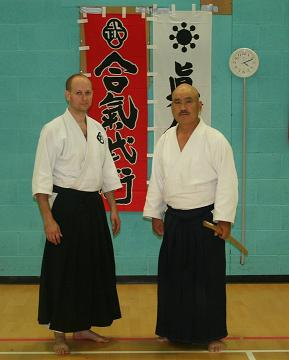Hunter Sensei is a full time Shinkendo and Aikibujutsu student of Shepherd Sensei. As of 2011, he is an Assistant Instructor at the Milton Keynes dojo.
Hunter Sensei has been fortunate enough to train under Obata Kaiso at various international seminars. In has also had the privilege of training under some of the world's best martial artists including: Joe Thambu 7th Dan Shihan, Moriteru Ueshiba Doshu and Mitsuteru Ueshiba 'Waka' Sensei.
The classes consist of Aikibujutsu, Toyama-Ryu, Shinkendo and Bojutsu. Please note that we are regulated by the ISF (International Shinkendo Federation - www.shinkendo.com), the KTRR (Kokusai Toyama Ryū Renmei - http://www.toyama-ryu.org) and the Aikibujutsu Tanren Kenkyukai (Aikibujutsu - http://www.aiki-buken.com).
All our instructors are fully insured through the British Aikido Association (BAA) and are Sport UK coach qualified. Copies of our qualifications and insurance are available for inspection if required.
Private lessons can be arranged where needed.
We also offer a woman's self-defence program, which is open to groups of woman who wish to develop some self-defence skills and/or general self confidence. This service is also open to companies who wish to provide some training to their female employees.
Leon Leisure Centre
Leon School & Sports College
Fern Grove
Bletchley
Milton Keynes
MK2 3HQ